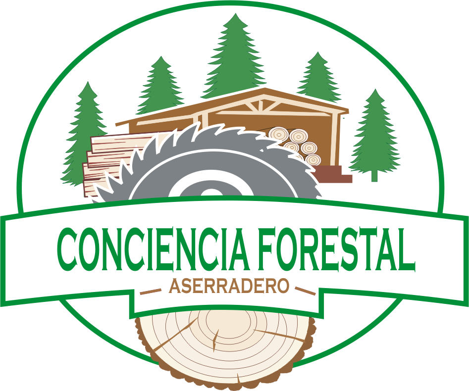
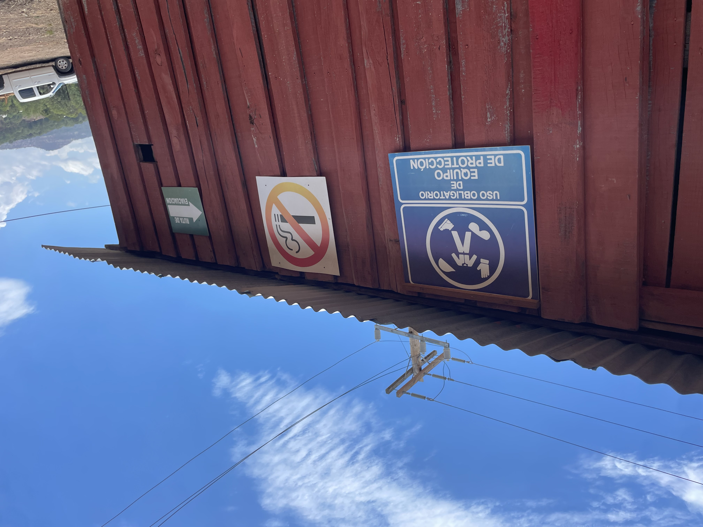

NOSOTROS
Somos un aserradero comunitario de Durango con mas de 50 años de experiencia en el procesamiento de madera de pino. Generamos empleo para la comunidad y trabajamos de manera responsablecon el medio ambiente mediante programas de reforestacion para conservar los bosques.
Trabajamos con lo mejor que nos da la naturaleza, pero siempre devolviedo el favor. Implementamos un programa estricto de reforestascion anual. Por cada arbol que aprobechamos, plantamos vida nueva para revertir el impacto ambiental, sanar nuestra tierra y asegurar el futuro verde de las proximas generaciones.


